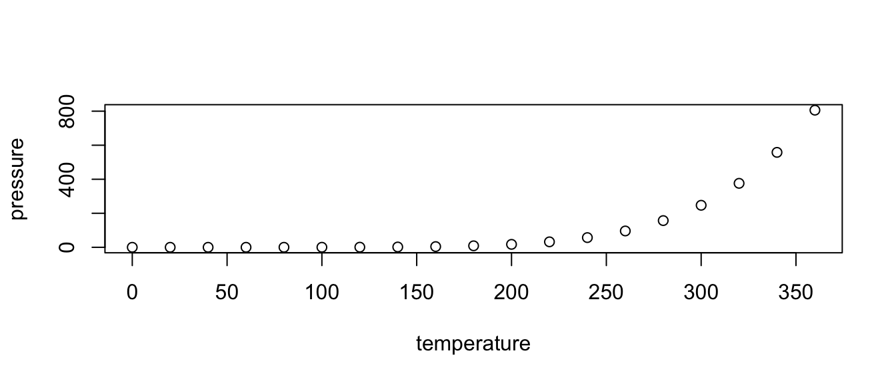

uvhbjk
yaml шапка - шаблон (вставляют важные аргументы, относящиеся к файлу вообще)
R Markdown
привет как дела В своей работе Gordon, Barthmaier, and Sands (2002) раскрыл
- катя
- маша
- маша петрова
< > - скобки для того, чтобы была видна ссылка и она была кликабелна # http://rmarkdown.rstudio.com. [1]
Ссылка 1
Вставка картинки #  голая метка # [метка]:http://rmarkdown.rstudio.com (???)
голая метка # [метка]:http://rmarkdown.rstudio.com (???)
оформление кода - через три черточки (бек тик). можно использовать стиль любого языка, напрмиер, питона, если добавить {python}print(“hello”)```
a <- 22В моих данных 22 переменных
цитаты: >пробел + использовать html-тег
чтобы разделить строчки
Жили были три медведа,
Чук и гек,
И политрук
разрыв страницы ***
RMD понимает html (можно использовать html внутри маркдауна)
Таблицы лучше делать в экселе, потом вставлять в этот сайт http://www.tablesgenerator.com/markdown_tables и забирать оттуда готовый код
PANDOC - программа, которая вшита в rmarkdown нумированные примеры: примеры нумеруются автоматически
- Славный пример номер раз.
- Славный пример номер два.
- Славный пример номер три, у которого есть имя.
Я могу сослаться на пример (3)!
код чанкс: в одном маркдауне можно использовать и смешивать разные языка программирования {r setup,— это имя чанка (для облегчения навигации и кеширования) echo = FALSE - показывает только резульатт кода, сам код - не показывает eval = FALSE - только код, который не исполняется
theme: spacelab highlight: pygments toc: yes - заголовок вообще есть toc_position: right toc_depth: 3 - до какого уровня подробно toc_float: yes - следует ли при прокручивании страницы smooth_scroll: false -
Отображение датафреймов
mtcars## speed dist
## Min. : 4.0 Min. : 2.00
## 1st Qu.:12.0 1st Qu.: 26.00
## Median :15.0 Median : 36.00
## Mean :15.4 Mean : 42.98
## 3rd Qu.:19.0 3rd Qu.: 56.00
## Max. :25.0 Max. :120.00Including Plots
You can also embed plots, for example:

Note that the echo = FALSE parameter was added to the code chunk to prevent printing of the R code that generated the plot.
Gordon, M., P. Barthmaier, and K. Sands. 2002. “A Cross-Linguistic Acoustic Study of Voiceless Fricatives.” Journal of the International Phonetic Association 32 (2). Cambridge University Press: 141–74.